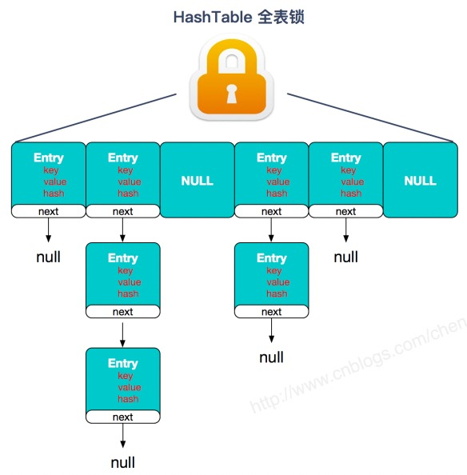
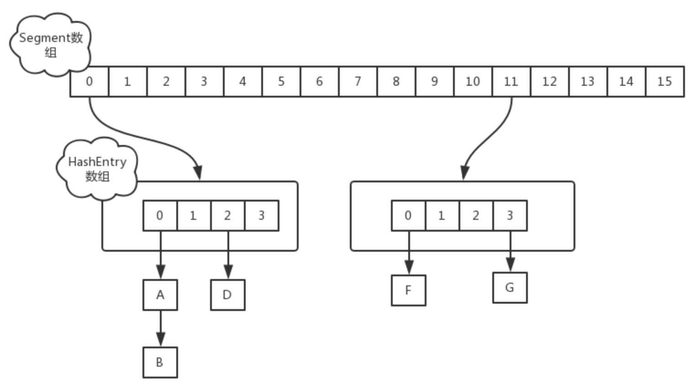
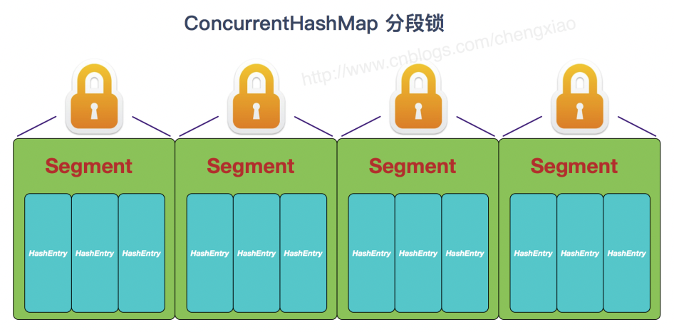
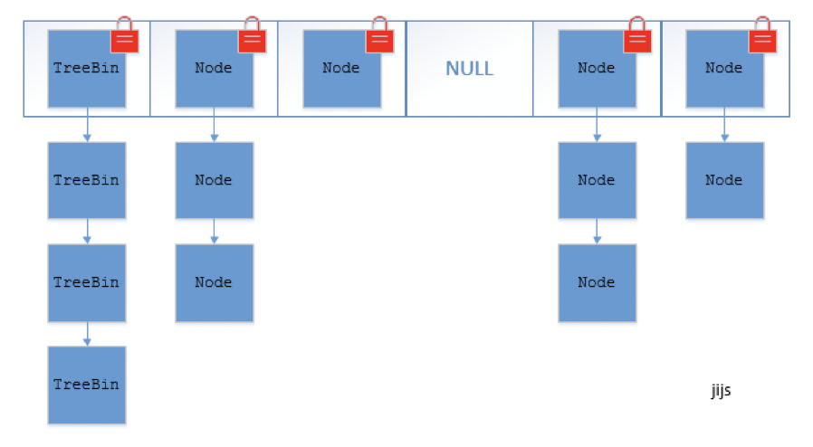

<!DOCTYPE html>


<html lang="zh-CN" >


<head>
  <meta charset="utf-8" />
    
  <meta name="description" content="代码生活的记录" />
  
  <meta name="viewport" content="width=device-width, initial-scale=1, maximum-scale=1" />
  <title>
    HashMap面试知识点总结 |  Shengwei&#39;s Blog
  </title>
  <meta name="generator" content="hexo-theme-yilia-plus">
  
  <link rel="shortcut icon" href="/favicon.ico" />
  
  
<link rel="stylesheet" href="/dist/main.css">

  
<link rel="stylesheet" href="/css/custom.css">

  
  <script src="https://cdn.jsdelivr.net/npm/pace-js@1.0.2/pace.min.js"></script>
  
  

  

<link rel="alternate" href="/atom.xml" title="Shengwei's Blog" type="application/atom+xml">
</head>

</html>

<body>
  <div id="app">
    <main class="content on">
      <section class="outer">
  <article id="post-HashMap面试知识点总结" class="article article-type-post" itemscope
  itemprop="blogPost" data-scroll-reveal>

  <div class="article-inner">
    
    <header class="article-header">
       
<h1 class="article-title sea-center" style="border-left:0" itemprop="name">
  HashMap面试知识点总结
</h1>
 

    </header>
    

    
    <div class="article-meta">
      <a href="/2020/05/08/HashMap%E9%9D%A2%E8%AF%95%E7%9F%A5%E8%AF%86%E7%82%B9%E6%80%BB%E7%BB%93/" class="article-date">
  <time datetime="2020-05-08T06:20:31.000Z" itemprop="datePublished">2020-05-08</time>
</a>
      
  <div class="article-category">
    <a class="article-category-link" href="/categories/Java/">Java</a>
  </div>

      
      
<div class="word_count">
    <span class="post-time">
        <span class="post-meta-item-icon">
            <i class="ri-quill-pen-line"></i>
            <span class="post-meta-item-text"> 字数统计:</span>
            <span class="post-count">2.6k字</span>
        </span>
    </span>

    <span class="post-time">
        &nbsp; | &nbsp;
        <span class="post-meta-item-icon">
            <i class="ri-book-open-line"></i>
            <span class="post-meta-item-text"> 阅读时长≈</span>
            <span class="post-count">9分钟</span>
        </span>
    </span>
</div>

      
    </div>
    

    
    
    <div class="tocbot"></div>


    

    
    <div class="article-entry" itemprop="articleBody">
      
      

      
      <blockquote>
<p>主要参考 <a href="https://github.com/SnailClimb/JavaGuide" target="_blank" rel="noopener">JavaGuide</a> 和 <a href="https://github.com/AobingJava/JavaFamily" target="_blank" rel="noopener">敖丙</a> 的文章, 其中也有参考其他的文章, 但忘记保存链接了, 文中图片也是引用别的大佬的, 请见谅.<br>新手上路, 若有问题, 欢迎指正.</p>
</blockquote>
<h2 id="背景"><a href="#背景" class="headerlink" title="背景"></a>背景</h2><p>HashMap 的相关问题在校招面试中十分常见, 作为新人, HashMap 的各个问题应该要理解的十分透彻才行. 此外, ConcurrentHashMap, Hashtable 也是经常与 HashMap 一同被问, 下文中都有介绍.</p>
<h2 id="HashMap-原理"><a href="#HashMap-原理" class="headerlink" title="HashMap 原理"></a>HashMap 原理</h2><h3 id="1-底层数据结构"><a href="#1-底层数据结构" class="headerlink" title="1. 底层数据结构"></a>1. 底层数据结构</h3><p>HashMap 在 JDK1.8 之前底层使用的是数组+链表的拉链式结构; 在 JDK1.8 之后引入了红黑树, 当链表长度大于阈值的时候就会将这个链表转化为红黑树. </p>
<h3 id="2-JDK1-8-中-HashMap-的改动"><a href="#2-JDK1-8-中-HashMap-的改动" class="headerlink" title="2. JDK1.8 中 HashMap 的改动"></a>2. JDK1.8 中 HashMap 的改动</h3><p>如上面所说, JDK1.8 中对 HashMap 做了一些改动, 在 JDK1.8 之前链表的插入使用的是头插法, 作者认为刚刚插入的数据被查询的可能性比较大, 头插法在多线程 resize 的时候可能会产生循环链表. JDK1.8 之后改为了尾插法, 在扩容的时候会保持链表元素原本的顺序, 避免了链表成环的问题, 但是改完以后 HashMap 依然不能支持并发场景. (不过 HashMap 本来也不是为多线程而生的呀)</p>
<h3 id="3-链表和红黑树的转化"><a href="#3-链表和红黑树的转化" class="headerlink" title="3. 链表和红黑树的转化"></a>3. 链表和红黑树的转化</h3><p>当链表长度大于阈值的时候就会将这个链表转化为红黑树, 链表转化为红黑树的默认阈值为 8, 如果红黑树的节点个数减少到一定程度也会转化为链表, 这是出于时间和空间的折中方案, 默认会在节点个数减少到 6 的时候进行转化.</p>
<h3 id="4-默认红黑树转化阈值的选择"><a href="#4-默认红黑树转化阈值的选择" class="headerlink" title="4. 默认红黑树转化阈值的选择"></a>4. 默认红黑树转化阈值的选择</h3><p>上面所讲的阈值为什么选择 8 和 6 呢? 根据泊松分布, 在负载因子为 0.75 (HashMap 的默认值) 的时候, 单个 hash 槽内元素个数为 8 的概率小于百万分之一, 所以将 7 作为一个分水岭, 等于 7 的时候不进行转化, 大于等于 8 时转化为红黑树, 小于等于 6 的时候再转化为链表.</p>
<h3 id="5-hash值的计算"><a href="#5-hash值的计算" class="headerlink" title="5. hash值的计算"></a>5. hash值的计算</h3><p>通过阅读源码, 我们可以发现它是通过 <code>(h = key.hashCode()) ^ (h &gt;&gt;&gt; 16)</code> 来计算 hash 值, 混合了 key 哈希值的高 16 位和低 16 位.</p>
<h3 id="6-扩容机制"><a href="#6-扩容机制" class="headerlink" title="6. 扩容机制"></a>6. 扩容机制</h3><p>HashMap 的默认容量 (其实就是拉链式中数组的长度) 为 16, 每次扩容都会变为原来的 2 倍, 并保证容量为 2 的幂次, 如果在构造函数或者扩容的时候给定一个不是 2 的幂次的数, 它会自动向上扩展到一个 2 的幂次.</p>
<h3 id="7-为什么-HashMap-的容量要保证是-2-的幂次"><a href="#7-为什么-HashMap-的容量要保证是-2-的幂次" class="headerlink" title="7. 为什么 HashMap 的容量要保证是 2 的幂次?"></a>7. 为什么 HashMap 的容量要保证是 2 的幂次?</h3><ul>
<li>由于使用拉链式的存储方式, 当 put 一个数据的时候, 需要对数组的长度取模确定数据在数组中的位置, 取模过程相对耗时, 因此需要优化取模运算. 当数组长度为 2 的幂次的时候, <code>hash % len</code> 等价于 <code>hash &amp; (len - 1)</code>, 与运算相对取模运算更快.</li>
<li>在满足容量为 2 的幂次的时候, <code>(len - 1)</code> 的所有二进制位都为 1, 这种情况下, 只需要保证 hash 算法的结果是均匀分布的, 那么 HashMap 中各元素一定是均匀分布的.</li>
<li>HashMap 中有个字段 <code>threshold</code>, 源码注解中写着 <code>The next size value at which to resize (capacity * load factor)</code>, 表示它用来判断下次什么时候扩容的字段. 当数组发生扩容时, 只需要再比较 1 bit 即可确定这个节点是否需要移动, 要么不动, 要么移动原来的数组长度.</li>
</ul>
<h3 id="8-为什么-HashMap-的默认容量是-16-呢"><a href="#8-为什么-HashMap-的默认容量是-16-呢" class="headerlink" title="8. 为什么 HashMap 的默认容量是 16 呢?"></a>8. 为什么 HashMap 的默认容量是 16 呢?</h3><p>这应该是一个经验值, 要保证容量为 2 的幂次, 并且需要在效率和空间上做一个权衡, 太大浪费空间, 太小需要频繁扩容.</p>
<h2 id="HashMap-与-Hashtable-的区别"><a href="#HashMap-与-Hashtable-的区别" class="headerlink" title="HashMap 与 Hashtable 的区别"></a>HashMap 与 Hashtable 的区别</h2><table>
<thead>
<tr>
<th>集合</th>
<th>线程安全性</th>
<th>效率</th>
<th>默认容量</th>
<th>扩容方式</th>
<th>底层结构</th>
<th>实现方式</th>
<th>是否支持null值</th>
<th>迭代器</th>
</tr>
</thead>
<tbody><tr>
<td>HashMap</td>
<td>不安全</td>
<td>高</td>
<td>16</td>
<td>2n (保证是2的幂次)</td>
<td>数组+链表+红黑树</td>
<td>继承AbstractMap类</td>
<td>Key允许存在一个null, Value可以为null</td>
<td>Fail-fast 机制</td>
</tr>
<tr>
<td>Hashtable</td>
<td>安全</td>
<td>低</td>
<td>11</td>
<td>2n+1</td>
<td>数组+链表</td>
<td>继承Dictionary类</td>
<td>Key和Value都不能为null</td>
<td>Enumerator</td>
</tr>
</tbody></table>
<h3 id="1-线程安全性和效率"><a href="#1-线程安全性和效率" class="headerlink" title="1. 线程安全性和效率"></a>1. 线程安全性和效率</h3><p>首先 HashMap 本来就不是针对多线程情况而设计的, Hashtable 是遗留类, 它内部使用 <code>synchronzied</code> 来修饰方式, 使得它能够成为一个同步集合, 但这种方式效率比较低.</p>
<p>我们可以通过两种方式来获得同步的 HashMap. </p>
<ol>
<li>第一种是使用 <code>Collentions.synchronizedMap(Map&lt;K,V&gt; m)</code> 来将一个非同步 Map 变为同步 Map. 这种方式的原理比较简单, 与 Hashtable 类似, 它会把传入的 map 对象作为 mutex 互斥锁对象, 然后在方法里都加上 <code>synchronized(mutex)</code> 的同步.</li>
<li>第二种是使用 <code>java.util.concurrent</code> 包下的同步集合 <code>ConcurrentHashMap</code>, 这个集合将在下面详细介绍.</li>
</ol>
<h3 id="2-对于-null-的支持和迭代器的差异"><a href="#2-对于-null-的支持和迭代器的差异" class="headerlink" title="2. 对于 null 的支持和迭代器的差异"></a>2. 对于 null 的支持和迭代器的差异</h3><figure class="highlight java"><table><tr><td class="gutter"><pre><span class="line">1</span><br><span class="line">2</span><br><span class="line">3</span><br><span class="line">4</span><br><span class="line">5</span><br></pre></td><td class="code"><pre><span class="line"><span class="comment">/* HashMap 中计算 hash 值的过程 */</span></span><br><span class="line"><span class="function"><span class="keyword">static</span> <span class="keyword">final</span> <span class="keyword">int</span> <span class="title">hash</span><span class="params">(Object key)</span> </span>&#123;</span><br><span class="line">    <span class="keyword">int</span> h;</span><br><span class="line">    <span class="keyword">return</span> (key == <span class="keyword">null</span>) ? <span class="number">0</span> : (h = key.hashCode()) ^ (h &gt;&gt;&gt; <span class="number">16</span>);</span><br><span class="line">&#125;</span><br></pre></td></tr></table></figure>

<figure class="highlight java"><table><tr><td class="gutter"><pre><span class="line">1</span><br><span class="line">2</span><br><span class="line">3</span><br><span class="line">4</span><br><span class="line">5</span><br><span class="line">6</span><br><span class="line">7</span><br><span class="line">8</span><br><span class="line">9</span><br><span class="line">10</span><br><span class="line">11</span><br><span class="line">12</span><br><span class="line">13</span><br><span class="line">14</span><br></pre></td><td class="code"><pre><span class="line"><span class="comment">/* Hashtable 中 put 的部分源码 */</span></span><br><span class="line"><span class="function"><span class="keyword">public</span> <span class="keyword">synchronized</span> V <span class="title">put</span><span class="params">(K key, V value)</span> </span>&#123;</span><br><span class="line">    <span class="comment">// Make sure the value is not null</span></span><br><span class="line">    <span class="keyword">if</span> (value == <span class="keyword">null</span>) &#123;</span><br><span class="line">        <span class="keyword">throw</span> <span class="keyword">new</span> NullPointerException();</span><br><span class="line">    &#125;</span><br><span class="line"></span><br><span class="line">    <span class="comment">// Makes sure the key is not already in the hashtable.</span></span><br><span class="line">    Entry&lt;?,?&gt; tab[] = table;</span><br><span class="line">    <span class="keyword">int</span> hash = key.hashCode();</span><br><span class="line">    <span class="keyword">int</span> index = (hash &amp; <span class="number">0x7FFFFFFF</span>) % tab.length;</span><br><span class="line"></span><br><span class="line">    ...</span><br><span class="line">&#125;</span><br></pre></td></tr></table></figure>

<p>首先从源码上看, Hashtable 在 put 值为 null 的 key 或者 value 时候会抛出 <code>NullPointerException</code>, 但是 HashMap 对值为 null 的 key 做了特殊处理. 看似很简单的处理, 那这么处理的内在原因是什么呢?</p>
<p>Hashtable 的迭代器使用了安全失败机制 (fail-safe), 这种机制在遍历元素的时候, 先复制原有集合内容, 在拷贝的集合上进行遍历, 这会使得每次读取到的数据并不一定是最新数据. 如果可以使用 null 值, 将会无法判断对应的 key 是不存在还是为空. ConrrentHashMap 也是同样的道理.</p>
<p>HashMap 则是使用安全失败机制 (fail-fast), 这种机制是指在用迭代器遍历一个集合对象的时候, 如果遍历过程中对集合对象的内容进行了修改, 则会抛出 <code>Concurrent Modification Exception</code>. 通过阅读源码, 我们可以发现这种机制使用了 <code>modCount</code> 变量, 每次遍历下个元素的时候, 都会检查 <code>modCount</code> 变量的值是否发生改变, 如果发生改变就会抛出异常. 我们不能依赖这个异常是否抛出来进行并发控制, 这个异常只建议用于检测并发修改的 bug.</p>
<p><code>java.util</code> 包下的集合 (除了同步容器: Hashtable, Vector 等) 都是 fail-fast, 而 <code>java.util.concurrent</code> 包下的集合和 <code>java.util</code> 包下的同步集合都是 fail-safe.</p>
<h2 id="ConcurrentHashMap-与-Hashtable-的区别"><a href="#ConcurrentHashMap-与-Hashtable-的区别" class="headerlink" title="ConcurrentHashMap 与 Hashtable 的区别"></a>ConcurrentHashMap 与 Hashtable 的区别</h2><ol>
<li><p>它们的底层结构不一样: ConcurrentHashMap 的底层结构与 HashMap 类似, 使用了数组+链表+红黑树, 而 Hashtable 使用了数组+链表.</p>
</li>
<li><p>它们都是线程安全的, 但它们实现线程安全的方式不一样.</p>
<ul>
<li>Hashtable 使用同一个对象锁, 用 synchronized 来保证线程安全.<br></li>
<li>ConcurrentHashMap 在 JDK1.7 中使用分段锁, 对整个数组进行分割来分段, 每把锁只锁定一部分数据, 多线程可以访问不同的数据段. Segment 锁继承了 ReentrantLock, 是一种可重入锁, 获取锁时先尝试自旋获取锁, 达到最大自旋次数后改为阻塞方式获取锁, 保证能够获取成功.<br><br></li>
<li>ConcurrentHashMap 在 JDK1.8 中不再使用分段 (Segment) 的概念, 直接用 Node 数组+链表+红黑树来实现, 使用 CAS + synchronized 来进行并发控制. sychronized 只锁定当前链表或红黑树的头节点, 只要 hash 不冲突就不会有并发问题.<br></li>
</ul>
</li>
</ol>
<h2 id="其他知识点"><a href="#其他知识点" class="headerlink" title="其他知识点"></a>其他知识点</h2><h3 id="1-HashMap-与-LinkedHashMap-的区别"><a href="#1-HashMap-与-LinkedHashMap-的区别" class="headerlink" title="1. HashMap 与 LinkedHashMap 的区别"></a>1. HashMap 与 LinkedHashMap 的区别</h3><p>LinkedHashMap 继承自 HashMap, 底层结构与 HashMap 一致, 主要区别是 LinkedHashMap 维护了一个双向链表, 记录了插入数据的顺序. LinkedHashMap 十分适合用来实现 LRU 算法, LRU 算法主要利用了双向链表和 HashMap, 这简直就是量身打造, 要是手撕代码题用 LinkedHashMap 简直是作弊, 一般面试官不会让你这么干的 :P. <a href="https://leetcode.com/problems/lru-cache/" target="_blank" rel="noopener">LeetCode 146 - LRU Cache</a></p>
<figure class="highlight java"><table><tr><td class="gutter"><pre><span class="line">1</span><br><span class="line">2</span><br><span class="line">3</span><br><span class="line">4</span><br><span class="line">5</span><br><span class="line">6</span><br><span class="line">7</span><br><span class="line">8</span><br><span class="line">9</span><br><span class="line">10</span><br><span class="line">11</span><br><span class="line">12</span><br><span class="line">13</span><br><span class="line">14</span><br><span class="line">15</span><br><span class="line">16</span><br></pre></td><td class="code"><pre><span class="line"><span class="keyword">public</span> <span class="class"><span class="keyword">class</span> <span class="title">LRU_Cache</span> </span>&#123;</span><br><span class="line">    <span class="keyword">private</span> Map&lt;Integer, Integer&gt; map;</span><br><span class="line">    <span class="function"><span class="keyword">public</span> <span class="title">LRU_Cache</span><span class="params">(<span class="keyword">int</span> capacity)</span> </span>&#123;</span><br><span class="line">        <span class="comment">// 设置 accessOrder = true 之后每次访问元素之后都会把这个元素移动到链表最后</span></span><br><span class="line">        map = <span class="keyword">new</span> LinkedHashMap&lt;&gt;(capacity, <span class="number">0.75f</span>, <span class="keyword">true</span>) &#123;</span><br><span class="line">            <span class="meta">@Override</span></span><br><span class="line">            <span class="function"><span class="keyword">protected</span> <span class="keyword">boolean</span> <span class="title">removeEldestEntry</span><span class="params">(Map.Entry&lt;Integer, Integer&gt; eldest)</span> </span>&#123;</span><br><span class="line">                <span class="keyword">return</span> size() &gt; capacity;</span><br><span class="line">            &#125;</span><br><span class="line">        &#125;;</span><br><span class="line">    &#125;</span><br><span class="line"></span><br><span class="line">    <span class="function"><span class="keyword">public</span> <span class="keyword">int</span> <span class="title">get</span><span class="params">(<span class="keyword">int</span> key)</span> </span>&#123; <span class="keyword">return</span> map.getOrDefault(key, -<span class="number">1</span>); &#125;</span><br><span class="line"></span><br><span class="line">    <span class="function"><span class="keyword">public</span> <span class="keyword">void</span> <span class="title">put</span><span class="params">(<span class="keyword">int</span> key, <span class="keyword">int</span> value)</span> </span>&#123; map.put(key, value); &#125;</span><br><span class="line">&#125;</span><br></pre></td></tr></table></figure>

<h3 id="2-HashMap-与-HashSet-的区别"><a href="#2-HashMap-与-HashSet-的区别" class="headerlink" title="2. HashMap 与 HashSet 的区别"></a>2. HashMap 与 HashSet 的区别</h3><p>阅读一下 HashSet 的源码, 我们会发现 HashSet 是基于 HashMap 来实现的, 只不过 HashMap 的使用 key 来计算 hash 值, 而 HashSet 使用的是成员对象.</p>
<h3 id="3-同步集合线程安全问题"><a href="#3-同步集合线程安全问题" class="headerlink" title="3. 同步集合线程安全问题"></a>3. 同步集合线程安全问题</h3><p>同步集合一定是线程安全的吗? 其实同步集合只能保证单个方法操作是线程安全的, 而对这些集合的复合操作是无法保证其线程安全性, 需要主动加锁来保证线程安全. 例子如下:</p>
<figure class="highlight java"><table><tr><td class="gutter"><pre><span class="line">1</span><br><span class="line">2</span><br><span class="line">3</span><br><span class="line">4</span><br></pre></td><td class="code"><pre><span class="line"><span class="function"><span class="keyword">public</span> <span class="keyword">void</span> <span class="title">deleteLastElement</span><span class="params">(Vector v)</span> </span>&#123;</span><br><span class="line">    <span class="keyword">int</span> lastIdx = v.size() - <span class="number">1</span>;</span><br><span class="line">    v.remove(lastIdx);</span><br><span class="line">&#125;</span><br></pre></td></tr></table></figure>

<h3 id="4-N-个元素要加入-HashMap-初始化为多大合适"><a href="#4-N-个元素要加入-HashMap-初始化为多大合适" class="headerlink" title="4. N 个元素要加入 HashMap, 初始化为多大合适?"></a>4. N 个元素要加入 HashMap, 初始化为多大合适?</h3><p>为了避免频繁的扩容操作, 我们应该尽量一次性初始化所需要的空间. </p>
<p>如果负载因子为 <code>0.75</code>, 假设 <code>N = 16</code>, 由于 <code>threshold = capacity * load factor = 16 * 0.75 = 12</code>, 当加入第 12 个元素的时候, HashMap 就需要扩容了, 因此直接初始化为 32 最为合适. </p>
<p>从上面这个例子中可以看出规律, 我们应该直接初始化 HashMap 的容量为 <code>capacity = N / load factor</code>, 并且将 <code>capacity</code> 向上取至 2 的幂次.</p>

      
      <!-- reward -->
      
      <div id="reward-btn">
        打赏
      </div>
      
    </div>
    
    
      <!-- copyright -->
      
        <div class="declare">
          <ul class="post-copyright">
            <li>
              <i class="ri-copyright-line"></i>
              <strong>版权声明： </strong s>
              本博客所有文章除特别声明外，均采用 <a href="https://www.apache.org/licenses/LICENSE-2.0.html" rel="external nofollow"
                target="_blank">Apache License 2.0</a> 许可协议。转载请注明出处！
            </li>
          </ul>
        </div>
        
    <footer class="article-footer">
      
          
<div class="share-btn">
      <span class="share-sns share-outer">
        <i class="ri-share-forward-line"></i>
        分享
      </span>
      <div class="share-wrap">
        <i class="arrow"></i>
        <div class="share-icons">
          
          <a class="weibo share-sns" href="javascript:;" data-type="weibo">
            <i class="ri-weibo-fill"></i>
          </a>
          <a class="weixin share-sns wxFab" href="javascript:;" data-type="weixin">
            <i class="ri-wechat-fill"></i>
          </a>
          <a class="qq share-sns" href="javascript:;" data-type="qq">
            <i class="ri-qq-fill"></i>
          </a>
          <a class="douban share-sns" href="javascript:;" data-type="douban">
            <i class="ri-douban-line"></i>
          </a>
          <!-- <a class="qzone share-sns" href="javascript:;" data-type="qzone">
            <i class="icon icon-qzone"></i>
          </a> -->
          
          <a class="facebook share-sns" href="javascript:;" data-type="facebook">
            <i class="ri-facebook-circle-fill"></i>
          </a>
          <a class="twitter share-sns" href="javascript:;" data-type="twitter">
            <i class="ri-twitter-fill"></i>
          </a>
          <a class="google share-sns" href="javascript:;" data-type="google">
            <i class="ri-google-fill"></i>
          </a>
        </div>
      </div>
</div>

<div class="wx-share-modal">
    <a class="modal-close" href="javascript:;"><i class="ri-close-circle-line"></i></a>
    <p>扫一扫，分享到微信</p>
    <div class="wx-qrcode">
      
    </div>
</div>

<div id="share-mask"></div>
      
      
  <ul class="article-tag-list" itemprop="keywords"><li class="article-tag-list-item"><a class="article-tag-list-link" href="/tags/ConcurrentHashMap/" rel="tag">ConcurrentHashMap</a></li><li class="article-tag-list-item"><a class="article-tag-list-link" href="/tags/HashMap/" rel="tag">HashMap</a></li><li class="article-tag-list-item"><a class="article-tag-list-link" href="/tags/Hashtable/" rel="tag">Hashtable</a></li><li class="article-tag-list-item"><a class="article-tag-list-link" href="/tags/Java%E9%9B%86%E5%90%88/" rel="tag">Java集合</a></li></ul>


    </footer>

  </div>

  
  
  <nav class="article-nav">
    
    
      <a href="/2020/05/04/%E5%9C%A8Maven%E9%A1%B9%E7%9B%AE%E4%B8%AD%E6%B7%BB%E5%8A%A0%E4%BB%A3%E7%A0%81%E7%9B%AE%E5%BD%95%E4%B8%8B%E7%9A%84%E9%85%8D%E7%BD%AE%E6%96%87%E4%BB%B6/" class="article-nav-link">
        <strong class="article-nav-caption">下一篇</strong>
        <div class="article-nav-title">在Maven项目中添加代码目录下的配置文件</div>
      </a>
    
  </nav>


  

  
  
<!-- valine评论 -->
<div id="vcomments-box">
    <div id="vcomments">
    </div>
</div>
<script src="//cdn1.lncld.net/static/js/3.0.4/av-min.js"></script>
<script src='https://cdn.jsdelivr.net/npm/valine@1.3.10/dist/Valine.min.js'></script>
<script>
    new Valine({
        el: '#vcomments',
        app_id: 'f5fPM8zUOFxGR3pjf9UMxcre-9Nh9j0Va',
        app_key: 'GcVyiO865y4dQa9O8nMNSYrT',
        path: window.location.pathname,
        notify: 'false',
        verify: 'false',
        avatar: 'mp',
        placeholder: '给我的文章加点评论吧~',
        recordIP: true
    });
    const infoEle = document.querySelector('#vcomments .info');
    if (infoEle && infoEle.childNodes && infoEle.childNodes.length > 0) {
        infoEle.childNodes.forEach(function (item) {
            item.parentNode.removeChild(item);
        });
    }
</script>
<style>
    #vcomments-box {
        padding: 5px 30px;
    }

    @media screen and (max-width: 800px) {
        #vcomments-box {
            padding: 5px 0px;
        }
    }

    #vcomments-box #vcomments {
        background-color: #fff;
    }

    .v .vlist .vcard .vh {
        padding-right: 20px;
    }

    .v .vlist .vcard {
        padding-left: 10px;
    }
</style>

  

  
  
  

</article>
</section>
      <footer class="footer">
  <div class="outer">
    <ul class="list-inline">
      <li>
        &copy;
        2020
        Shengwei Xu
      </li>
      <li>
        
        Powered by
        
        
        <a href="https://hexo.io" target="_blank">Hexo</a> Theme <a href="https://github.com/Shen-Yu/hexo-theme-ayer" target="_blank">Ayer</a>
        
      </li>
    </ul>
    <ul class="list-inline">
      <li>
        
        
        <span>
  <i>PV:<span id="busuanzi_value_page_pv"></span></i>
  <i>UV:<span id="busuanzi_value_site_uv"></span></i>
</span>
        
      </li>
      
      <li>
        <!-- cnzz统计 -->
        
      </li>
    </ul>
  </div>
</footer>
      <div class="float_btns">
        <div class="totop" id="totop">
  <i class="ri-arrow-up-line"></i>
</div>

<div class="todark" id="todark">
  <i class="ri-moon-line"></i>
</div>

      </div>
    </main>
    <aside class="sidebar on">
      <button class="navbar-toggle"></button>
<nav class="navbar">
  
  <ul class="nav nav-main">
    
    <li class="nav-item">
      <a class="nav-item-link" href="/">主页</a>
    </li>
    
    <li class="nav-item">
      <a class="nav-item-link" href="/archives">归档</a>
    </li>
    
    <li class="nav-item">
      <a class="nav-item-link" href="/categories">分类</a>
    </li>
    
    <li class="nav-item">
      <a class="nav-item-link" href="/tags">标签</a>
    </li>
    
    <li class="nav-item">
      <a class="nav-item-link" href="/2020/04/03/about">关于</a>
    </li>
    
  </ul>
</nav>
<nav class="navbar navbar-bottom">
  <ul class="nav">
    <li class="nav-item">
      
      <a class="nav-item-link nav-item-search"  title="搜索">
        <i class="ri-search-line"></i>
      </a>
      
      
    </li>
  </ul>
</nav>
<div class="search-form-wrap">
  <div class="local-search local-search-plugin">
  <input type="search" id="local-search-input" class="local-search-input" placeholder="Search...">
  <div id="local-search-result" class="local-search-result"></div>
</div>
</div>
    </aside>
    <script>
      if (window.matchMedia("(max-width: 768px)").matches) {
        document.querySelector('.content').classList.remove('on');
        document.querySelector('.sidebar').classList.remove('on');
      }
    </script>
    <div id="mask"></div>

<!-- #reward -->
<div id="reward">
  <span class="close"><i class="ri-close-line"></i></span>
  <p class="reward-p"><i class="ri-cup-line"></i>请我喝杯咖啡吧~</p>
  <div class="reward-box">
    
    <div class="reward-item">
      
      <span class="reward-type">支付宝</span>
    </div>
    
    
    <div class="reward-item">
      
      <span class="reward-type">微信</span>
    </div>
    
  </div>
</div>
    
<script src="/js/jquery-2.0.3.min.js"></script>


<script src="/js/lazyload.min.js"></script>


<script>
  try {
    var typed = new Typed("#subtitle", {
      strings: ['Your code makes a difference.', 'Talk is cheap, show me the code.', ''],
      startDelay: 0,
      typeSpeed: 200,
      loop: true,
      backSpeed: 100,
      showCursor: true
    });
  } catch (err) {
  }

</script>


<script src="/js/tocbot.min.js"></script>

<script>
  // Tocbot_v4.7.0  http://tscanlin.github.io/tocbot/
  tocbot.init({
    tocSelector: '.tocbot',
    contentSelector: '.article-entry',
    headingSelector: 'h1, h2, h3, h4, h5, h6',
    hasInnerContainers: true,
    scrollSmooth: true,
    scrollContainer: 'main',
    positionFixedSelector: '.tocbot',
    positionFixedClass: 'is-position-fixed',
    fixedSidebarOffset: 'auto'
  });
</script>


<script src="https://cdn.jsdelivr.net/npm/jquery-modal@0.9.2/jquery.modal.min.js"></script>
<link rel="stylesheet" href="https://cdn.jsdelivr.net/npm/jquery-modal@0.9.2/jquery.modal.min.css">
<script src="https://cdn.jsdelivr.net/npm/justifiedGallery@3.7.0/dist/js/jquery.justifiedGallery.min.js"></script>

<script src="/dist/main.js"></script>


<!-- Root element of PhotoSwipe. Must have class pswp. -->
<div class="pswp" tabindex="-1" role="dialog" aria-hidden="true">

    <!-- Background of PhotoSwipe. 
         It's a separate element as animating opacity is faster than rgba(). -->
    <div class="pswp__bg"></div>

    <!-- Slides wrapper with overflow:hidden. -->
    <div class="pswp__scroll-wrap">

        <!-- Container that holds slides. 
            PhotoSwipe keeps only 3 of them in the DOM to save memory.
            Don't modify these 3 pswp__item elements, data is added later on. -->
        <div class="pswp__container">
            <div class="pswp__item"></div>
            <div class="pswp__item"></div>
            <div class="pswp__item"></div>
        </div>

        <!-- Default (PhotoSwipeUI_Default) interface on top of sliding area. Can be changed. -->
        <div class="pswp__ui pswp__ui--hidden">

            <div class="pswp__top-bar">

                <!--  Controls are self-explanatory. Order can be changed. -->

                <div class="pswp__counter"></div>

                <button class="pswp__button pswp__button--close" title="Close (Esc)"></button>

                <button class="pswp__button pswp__button--share" style="display:none" title="Share"></button>

                <button class="pswp__button pswp__button--fs" title="Toggle fullscreen"></button>

                <button class="pswp__button pswp__button--zoom" title="Zoom in/out"></button>

                <!-- Preloader demo http://codepen.io/dimsemenov/pen/yyBWoR -->
                <!-- element will get class pswp__preloader--active when preloader is running -->
                <div class="pswp__preloader">
                    <div class="pswp__preloader__icn">
                        <div class="pswp__preloader__cut">
                            <div class="pswp__preloader__donut"></div>
                        </div>
                    </div>
                </div>
            </div>

            <div class="pswp__share-modal pswp__share-modal--hidden pswp__single-tap">
                <div class="pswp__share-tooltip"></div>
            </div>

            <button class="pswp__button pswp__button--arrow--left" title="Previous (arrow left)">
            </button>

            <button class="pswp__button pswp__button--arrow--right" title="Next (arrow right)">
            </button>

            <div class="pswp__caption">
                <div class="pswp__caption__center"></div>
            </div>

        </div>

    </div>

</div>

<link rel="stylesheet" href="https://cdn.jsdelivr.net/npm/photoswipe@4.1.3/dist/photoswipe.min.css">
<link rel="stylesheet" href="https://cdn.jsdelivr.net/npm/photoswipe@4.1.3/dist/default-skin/default-skin.min.css">
<script src="https://cdn.jsdelivr.net/npm/photoswipe@4.1.3/dist/photoswipe.min.js"></script>
<script src="https://cdn.jsdelivr.net/npm/photoswipe@4.1.3/dist/photoswipe-ui-default.min.js"></script>

<script>
    function viewer_init() {
        let pswpElement = document.querySelectorAll('.pswp')[0];
        let $imgArr = document.querySelectorAll(('.article-entry img:not(.reward-img)'))

        $imgArr.forEach(($em, i) => {
            $em.onclick = () => {
                // slider展开状态
                // todo: 这样不好，后面改成状态
                if (document.querySelector('.left-col.show')) return
                let items = []
                $imgArr.forEach(($em2, i2) => {
                    let img = $em2.getAttribute('data-idx', i2)
                    let src = $em2.getAttribute('data-target') || $em2.getAttribute('src')
                    let title = $em2.getAttribute('alt')
                    // 获得原图尺寸
                    const image = new Image()
                    image.src = src
                    items.push({
                        src: src,
                        w: image.width || $em2.width,
                        h: image.height || $em2.height,
                        title: title
                    })
                })
                var gallery = new PhotoSwipe(pswpElement, PhotoSwipeUI_Default, items, {
                    index: parseInt(i)
                });
                gallery.init()
            }
        })
    }
    viewer_init()
</script>


<script type="text/x-mathjax-config">
  MathJax.Hub.Config({
      tex2jax: {
          inlineMath: [ ['$','$'], ["\\(","\\)"]  ],
          processEscapes: true,
          skipTags: ['script', 'noscript', 'style', 'textarea', 'pre', 'code']
      }
  });

  MathJax.Hub.Queue(function() {
      var all = MathJax.Hub.getAllJax(), i;
      for(i=0; i < all.length; i += 1) {
          all[i].SourceElement().parentNode.className += ' has-jax';
      }
  });
</script>

<script src="https://cdn.jsdelivr.net/npm/mathjax@2.7.6/unpacked/MathJax.js?config=TeX-AMS-MML_HTMLorMML"></script>
<script>
  var ayerConfig = {
    mathjax: true
  }
</script>


    
        <link rel="stylesheet" href="https://cdn.jsdelivr.net/npm/katex@0.11.1/dist/katex.min.css">
        <script src="https://cdn.jsdelivr.net/npm/katex@0.11.1/dist/katex.min.js"></script>
        <script src="https://cdn.jsdelivr.net/npm/katex@0.11.1/dist/contrib/auto-render.min.js"></script>
        
    


<script src="/js/busuanzi-2.3.pure.min.js"></script>


<script type="text/javascript" src="https://js.users.51.la/20544303.js"></script>

  
<script src="/js/clickLove.js"></script>


    
  </div>
</body>

</html>